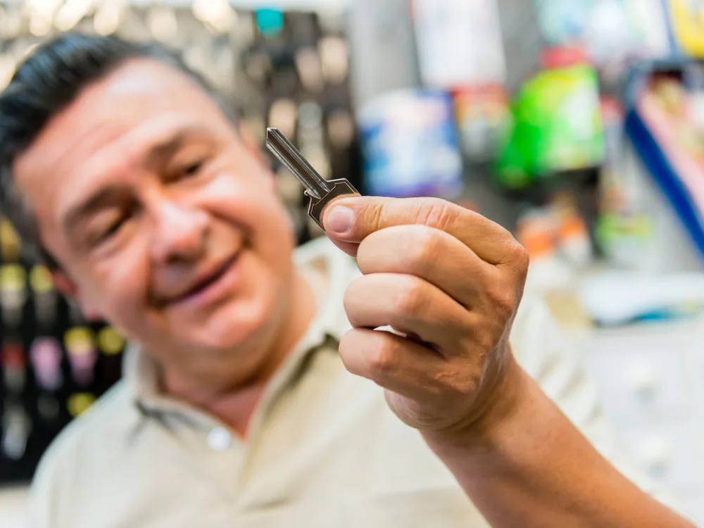
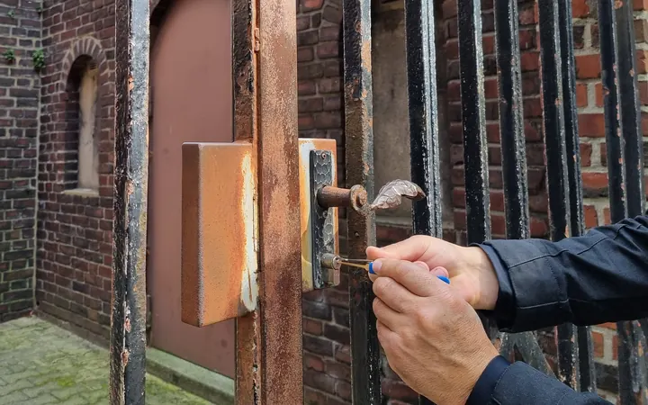
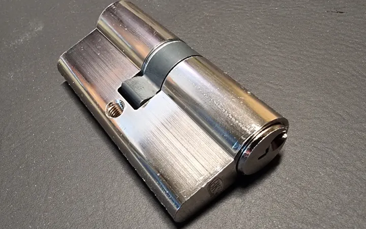
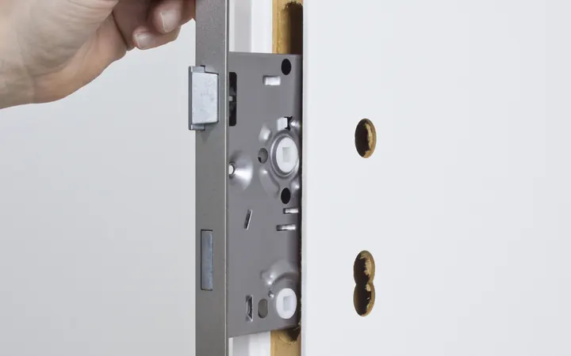
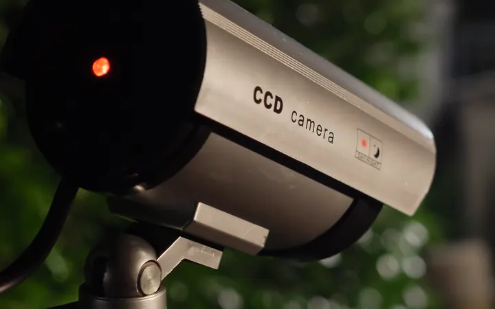
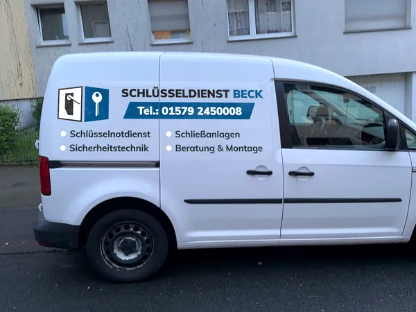

Schlüsseldienst in Haan
Ausgesperrt in Haan? Wir sind meist in 10–40 Minuten da.
Türöffnung, Zylinderwechsel und Einbruchschutz in Haan und Gruiten. Tag und Nacht erreichbar.
- Türöffnung ab 49 €für Zimmertüren
- 24 Stundenerreichbar
- 5,0 bei GoogleBewertung

Unsere Leistungen in Haan
-

Türöffnung
Zimmertür, Mo–Fr ab 49 €
Nach Möglichkeit zerstörungsfrei und ohne versteckte Kosten.
-

Schloss- und Zylinderwechsel
Wechsel ab 79 €zzgl. Material
Nach dem Einzug, nach Schlüsselverlust oder bei defektem Schloss.
-

Einbruchschutz
Einbau mit Beratung
Panzerriegel, Fenstersicherung und Sicherheitszylinder. Einbruchschäden beseitigen wir auch.
-

Alarmanlagen und Videoüberwachung
Einbau und Reparatur
Alarmanlagen, Bewegungsmelder und Kameras für Haus und Wohnung.
Das Wichtigste zum Schlüsseldienst in Haan
Schlüsseldienst Beck ist Ihr Schlüsselnotdienst für Haan und Gruiten. Ob Haustür, Wohnung oder Zimmer: Wir öffnen, wechseln auf Wunsch den Schließzylinder und beraten Sie zum Einbruchschutz. Sie erreichen uns rund um die Uhr unter 02129 3679711 oder per WhatsApp und hören den Preis, bevor wir kommen.
- Erreichbar
- rund um die Uhr, auch am Wochenende und an Feiertagen
- Vor Ort
- in Haan meist in 10–40 Minuten
- Türöffnung
- ab 49 € (Zimmertür, Mo–Fr tagsüber)
- Zylinder
- Wechsel ab 79 € zzgl. Material
- Schlüssel
- nachmachen, Autoschlüssel programmieren
- Nachweis
- wir öffnen nur für Berechtigte
- Bezahlen
- bar oder Karte, mit Rechnung
- Bewertung
- 5,0 Sterne bei Google
In Haan und Gruiten im Einsatz
Die Gartenstadt Haan besteht aus der Kernstadt mit Unter-, Mittel- und Oberhaan und aus Gruiten im Norden. Dazu kommen alte Hofschaften im Grüngürtel rund um die Stadt. Überall dort öffnen wir Türen, zu jeder Uhrzeit.
- Innenstadt
- Unterhaan
- Mittelhaan
- Oberhaan
- Musikantenviertel
- Thienhausen
- Bollenberg
- Ellscheid
- Gruiten
- Gruiten-Dorf
- Obgruiten
- Polnische Mütze
- Stropmütze
- Kneteisen
- Nachbarsberg
- Bellekuhl
- Spörkelnbruch
- Tannenwäldchen
- Birschels
- Habbach
Schlüsseldienst in der Innenstadt und im Musikantenviertel
An der Kaiserstraße stehen das Rathaus und das Becherhus, eine Gaststätte von 1728 in bergischer Schieferbauweise. Am Alten Markt und an der Schiller- und Königstraße prägen Häuser und Villen aus der Zeit um 1900 das Bild. Das Musikantenviertel zählt zu den Villenkolonien des 19. Jahrhunderts. Ihre Haustüren öffnen wir, wann immer es geht, ohne Schaden an Tür und Rahmen.
Schlüsseldienst in Gruiten
Gruiten-Dorf an der Düssel ist mit seinen Fachwerkhäusern die größte erhaltene historische Siedlung auf Haaner Gebiet. Im neueren Gruiten liegen das Ortszentrum und der Bahnhof Haan-Gruiten. Ob Fachwerkhaus im Dorf oder Wohnung im neueren Teil: Wir öffnen Ihre Tür und setzen auf Wunsch gleich einen neuen Zylinder ein.
Schlüsseldienst in Oberhaan und an der Polnischen Mütze
Im Haaner Osten, nahe der Grenze zu Vohwinkel und Gräfrath, kreuzen sich an der Polnischen Mütze die B 228 und die L 357. Dort wurde ein Gewerbegebiet erschlossen. Für die Betriebe dort übernehmen wir Beratung und Montage von Schließanlagen. In Oberhaan und Stropmütze öffnen wir Türen rund um die Uhr.
Schlüsseldienst am Ittertal und in Kneteisen
Im Süden bildet die Itter auf weiten Strecken die Grenze zu Solingen. An ihr stehen alte Kotten und Mühlen, heute Wohnhäuser oder Restaurants. Oberhalb des Tals liegt die Hofschaft Kneteisen. Unser Monteur berät Sie kostenlos, wie Sie ein solches Haus mit Panzerriegeln und Fenstersicherungen besser schützen.
Ausgesperrt in Haan? So geht es weiter
Anrufen
Wählen Sie 02129 3679711, egal zu welcher Uhrzeit. Nennen Sie uns Ortsteil und Straße und sagen Sie, ob die Tür zugefallen oder abgeschlossen ist.
Preis hören
Wir nennen Ihnen den Preis für Ihre Tür. Losgefahren wird erst, wenn Sie einverstanden sind.
Nachweis zeigen
Halten Sie Ihren Ausweis bereit. Ist er in der Wohnung, beschreiben Sie uns vorab, wie es drinnen aussieht.
Kein Werkzeug ansetzen
Bitte nicht mit Schraubendreher oder Plastikkarte probieren. Dabei leiden oft Schloss und Rahmen.
Preise
Eine Zimmertür öffnen wir Mo–Fr tagsüber ab 49 €. Alle Preise zzgl. MwSt. und Anfahrt.
Den Zylinder wechseln wir ab 79 € zuzüglich Material. Abends, nachts und an Feiertagen gelten Zuschläge.
Was Ihr Einsatz insgesamt kostet, sagen wir Ihnen vorher am Telefon.
Alle Preise ansehenErsatzschlüssel und Autoschlüssel
Ein zweiter Schlüssel spart Ärger, wenn die Tür einmal zufällt. Wir machen Schlüssel nach und programmieren Autoschlüssel. Wo und wann das geht, lesen Sie auf der Seite Schlüssel nachmachen oder hören es unter 02129 3679711.
Haus- und Wohnungsschlüssel
Bringen Sie den Schlüssel mit, den Sie nachmachen lassen möchten. Ist ein Schlüssel verloren gegangen, wechseln wir besser gleich den Zylinder. Dann schließt der verlorene Schlüssel nicht mehr.
Autoschlüssel
Autoschlüssel programmieren wir für Sie. Welche Angaben zu Ihrem Fahrzeug wir dafür brauchen, klären wir vorher am Telefon.
Was wir in Haan außerdem machen
Fachwerk, Schiefer und Neubau
In Haan stehen viele Fachwerk- und Schieferhäuser. Mit Altbautüren haben wir ebenso Erfahrung wie mit Stahltüren und elektronischen Schlössern im Neubau. Auch Gegensprechanlagen kennen wir.
Einbruchschutz mit Beratung
Auf die Beratung bei Ihnen folgt ein Angebot. Sagen Sie zu, setzen wir Panzerriegel, Fenstersicherungen und Sicherheitszylinder ein, etwa von ABUS, DOM oder Winkhaus. Nach einem Einbruch beheben wir Schäden an Tür und Schloss.
Alarmanlage, Kamera, Türspion
Wir bauen Alarmanlagen, Bewegungsmelder, Kameras und Türspione ein, warten und reparieren sie. Mehr dazu unter Alarmanlagen und Videoüberwachung.
Schließanlagen für Betriebe
Für Büro, Praxis, Laden oder Werkstatt in Haan planen wir mit Ihnen eine Schließanlage und bauen sie ein.
Das sagen unsere Kunden
5,0 von 5 Sternen bei Google
Alle Rezensionen bei Google lesen · Prüfung auf Fälschungen durch Google
„Super Schlüsseldienst!! Habe mich aus der Wohnung ausgesperrt und mir wurde sehr schnell und zu einem fairen Preis geholfen!“
„Schnell vor Ort, unkompliziert die Türe geöffnet. Preis wie vorab besprochen, Mobile Zahlung möglich inklusive Rechnung per Mail. Vielen Dank“
Fragen zum Schlüsseldienst in Haan
Was kostet ein Schlüsseldienst in Haan?
Der Preis ab 49 € für eine Zimmertür gilt unter der Woche tagsüber, also Mo–Fr von 9:00 bis 18:30 Uhr. Hinzu kommen die Mehrwertsteuer und 36 € für die Anfahrt, abends, nachts und an Feiertagen außerdem Zuschläge. Ihren Gesamtpreis kennen Sie, bevor wir losfahren. Alle Beträge finden Sie unter Preise.
Wie schnell sind Sie in Haan vor Ort?
Meist in 10–40 Minuten, je nach Ortsteil und Verkehr. Ihre Wartezeit sagen wir Ihnen beim Anruf.
Sind Sie auch in Gruiten und in den Hofschaften im Einsatz?
Ja, in ganz Haan: in der Innenstadt, in Unter-, Mittel- und Oberhaan, in Gruiten und Gruiten-Dorf und in den Hofschaften am Stadtrand.
Sind Sie nachts, am Wochenende und an Feiertagen erreichbar?
Ja, an jedem Tag rund um die Uhr unter 02129 3679711. Für Abend, Nacht und Feiertag kommen Zuschläge dazu. Ihren Preis, auch am Wochenende, hören Sie vorher.
Woran erkenne ich in Haan einen seriösen Schlüsseldienst?
Er nennt den Preis am Telefon, bevor er losfährt, öffnet erst nach einem Nachweis und gibt Ihnen eine Rechnung. Genau so arbeiten wir. Geht einmal etwas schief, steht unser Betrieb mit seiner Haftpflicht dafür gerade.
Machen Sie auch Schlüssel nach?
Ja. Wir machen Schlüssel für Haus und Wohnung nach und programmieren Autoschlüssel. Wo und wann das geht, steht auf unserer Seite Schlüssel nachmachen.
Mein Ausweis ist in der Wohnung. Öffnen Sie trotzdem?
Ja. Beschreiben Sie uns am Telefon ein paar Dinge aus Ihrer Wohnung, die nur Bewohner kennen. Ist die Tür offen, sehen wir gemeinsam nach, und Sie zeigen uns Ihren Ausweis.
Tauschen Sie das Schloss gleich mit aus?
Wenn Sie es wünschen oder der Zylinder beschädigt ist, ja. Ersatzzylinder von ABUS, BKS und DOM haben wir im Wagen. Ein Zylinderwechsel kostet ab 79 € zuzüglich Material.
Wie zahle ich?
Bar oder mit Karte. Eine Rechnung bekommen Sie zu jedem Einsatz.
Ihre Frage steht nicht hier? Dann rufen Sie uns an: 02129 3679711
Auch in den Nachbarstädten unterwegs
Haan grenzt an Wuppertal, Solingen und Hilden. Dort und in Düsseldorf sind wir ebenfalls für Sie da:
Tür zu in Haan? Rufen Sie uns an.
24 Stunden erreichbar, auch an Wochenenden und Feiertagen.
